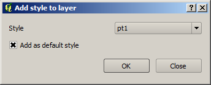
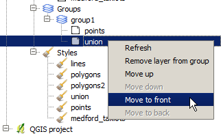
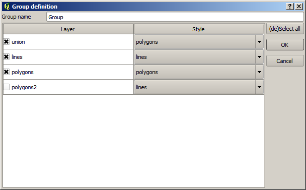
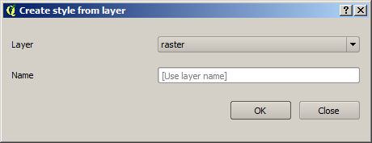
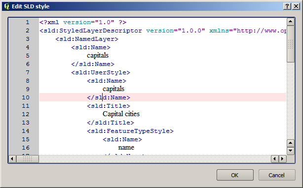
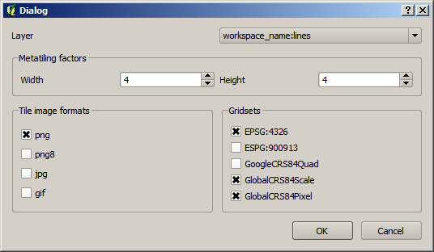
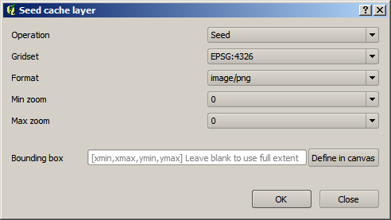
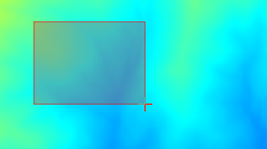
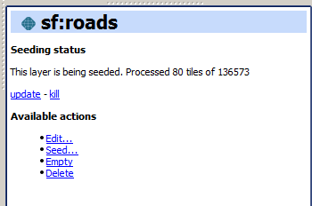

GeoServer Catalogs actions¶
GeoServer catalogs are defined using the New catalog option in the GeoServer catalogs item. A catalog is defined using the following dialog:

New catalog dialog
Basic authentication is supported, as well as certificate-based authentication. Select the corresponding tab and enter the required parameters. The active tab in the window will define the type of authentication to use, even if the other tab has data in its text boxes.
The certificate parameters should point at PEM files with certificates and keys. A CA root certificates file can be configured in the OpenGeo Explorer plugin setting dialog, which will be used along with the key and certificate files.
There are certain limitations when using PKI authentication. See the PKI authentication limitations section to know more about them.
The GeoNode URL is needed if you want to publish a GeoServer layer to a GeoNode endpoint. Otherwise, it is optional, and you can leave the default value.
The list of catalogs is empty by default when you start the OpenGeo Explorer. See the Keep a list of previous GeoServer connections section to know how to keep a list of previously opened catalogs, so you do not have to define them and connect to them in each session.
This is a detailed list of actions available for each item under the GeoServer branch.
GeoServer catalog¶
| Action | Description |
|---|---|
| Refresh | Updates the contents of the catalog. |
| Remove | Removes the catalog from the list of connected ones. This also removes it from the list that is stored between sessions if enabled, so it will not appear the next time QGIS is started and OpenGeo Explorer is run. |
| Clean (remove unused elements) | Cleans all styles in the catalog that are not used by any layer, and all stores that are not published through any layer. |
GeoServer Workspaces¶
| Action | Description |
|---|---|
| Refresh | Updates the contents of all workspaces. |
| New workspace | Adds a new workspace. |
GeoServer workspace¶
| Action | Description |
|---|---|
| Refresh | Updates the contents of the workspace. |
| Set as default workspace | Sets this workspace as the default one. |
| Delete | Deletes the workspace from the catalog. |
| Clean (remove unused resources) | Removes all data stores that are not published through any layer in the catalog. |
GeoServer Layers¶
| Action | Description |
|---|---|
| Refresh | Updates the contents of the layer list. |
GeoServer layer¶
| Action | Description |
|---|---|
| Refresh | Updates the contents of the layer. |
| Add style to layer | Adds a new style to the layer from the list of available ones in the catalog. The style is selected from the dialog: If the layer is under a layer group item, the available commands can be used to re–order layers in the group or remove them.  |
| Delete | Deletes the layer from the catalog. The associated style or resource may also be deleted; see the Configuration section for more about how to set those parameters. |
| Add to current QGIS project | Adds to the current project, and includes the style information in the case of vector layers. Style is downloaded as an SLD file and configured for the corresponding QGIS layer. In the case of raster layers, there is no support for SLD styles, and for this reason the layer will use a default style. |
| Publish to GeoNode | Publishes the layer to the associated GeoNode connection that was defined when connecting to the catalog. |
GeoServer Groups¶
| Action | Description |
|---|---|
| Refresh | Updates the contents of the layer group list. |
GeoServer group¶
| Action | Description |
|---|---|
| Refresh | Updates the contents of the layer group. |
| Edit | Layers in a group can be configured through the following dialog:  |
| Delete | Deletes the group from the catalog. |
GeoServer Styles¶
| Action | Description |
|---|---|
| New style from QGIS layer | Creates a new style in the GeoServer catalog using the style of a QGIS layer. The QGIS layer to use and the name of the style to create in the GeoServer catalog are specified in the following dialog.  |
| Clean (remove unused styles) | Removes all styles that are not being used by any layer. |
| Consolidate styles | Searches for layers in the catalog that have different styles that correspond to the same symbology. This might occur when uploading layers with the same style, since each uploaded layer will have its own layer with the same name as the layer, and all of them will share the same SLD code. This command replaces the corresponding styles with the first style in the list of redundant styles. After the command has been run, only one style of those that are identical will be in use, while the remaining ones will not be used by any layer. Those unused styles are not removed, but calling the Clean (remove unused styles) command will remove then from the catalog. |
GeoServer style¶
| Action | Description |
|---|---|
| Delete | Deletes the style from the catalog. |
| Edit | Opens the QGIS symbology editor to edit the style of the layer. Some restrictions exist:
Labeling is not supported in this case when fetching the SLD style to edit. That means that you can add labeling to the style you define, and it will get correctly uploaded to the catalog, but if the style you are editing has some kind of labeling defined, it will not appear on the QGIS style editor, which will always has labeling disabled. Editing a style using the QGIS symbology editor is only supported for vector styles. |
| Edit SLD | Directly edits the content of the corresponding SLD, using a dialog with an XML editor, such as the one shown below. No validation is performed on the client side, but if the content of the editor is not a valid SLD, GeoServer will refuse to update it, and a corresponding error message shown. |
| Set as default style | Sets the style as the default style for the layer. Only shown when the style is under a layer item. |
| Add style to layer | A style can be selected in the dialog that will be shown, and it will be added as an additional style for the layer. Only shown when the style is under a layer item. |
| Remove style from layer | Removes a style from the list of alternatives styles of the layer. Only shown when the style is under a layer item, and not the default style. |
GeoWebCache Layers¶
| Action | Description |
|---|---|
| Refresh | Updates the contents of the cached layer list. |
| New GWC layer | Adds a new GeoWebCache layer from an existing layer in the GeoServer catalog. The properties of the cached layer are defined in a dialog like the one shown below.  |
GeoWebCache layer¶
| Action | Description |
|---|---|
| Edit | Allows to change the properties of the GeoWebCache layer, by opening the same dialog used to define them when creating the layer. |
| Seed | Launches a seeding operation for the cached layer. The operation is defined through the following dialog: The area to seed has to be entered in the box in the bottom part of the dialog, with a string of 4 comma-separated values (xmin, xmax, ymin, ymax). If no values are entered, the full extent of the layer to seed is used. Another way of setting the seeding region is to click the Define on canvas button on the right side of the extent box. Then click and drag on the canvas to define the desired seeding region, and the dialog will be populated with the coordinates of the region. When a seeding operation is started, the description box corresponding to the GWC layer being seeded will show the current state of the operation. Since this operation might be very long, depending on the selected zoom levels and the area covered by the layer, progress in this case is not shown using the normal progress bar and hourglass mouse pointer. Instead, you can use QGIS as usual while the operation is running in the background, and to update the status, click the update link in the description box to get the current status. To stop the seeding operation, click the kill link. |
| Empty | Deletes (truncates) all cached data for a given layer. |
| Delete | Removes the cached layer. |
WPS Processes¶
Provides a read-only list of the available WPS processes in GeoServer, if any. There are no actions available with this element.
GeoServer Settings¶
When this item is selected, it will display all configurable parameters in the Description panel. You can edit them there and then press the Save button to upload changes to the corresponding catalog and update it.
GeoServer Settings
Note
The description panel must be shown in order for these settings to be edited. It can be toggled on and off in the Configuration.
Table Of Contents
This Page
About Boundless
Boundless provides commercial open source software for internet mapping and geospatial application development. We are dedicated to the growth and support of open source software.
License
This work is licensed under a Creative Commons Attribution-Share Alike 3.0 United States License. Feel free to use this material, but we ask that you please retain the Boundless branding, logos and style.